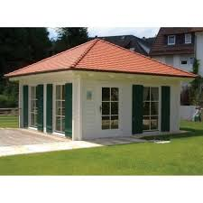
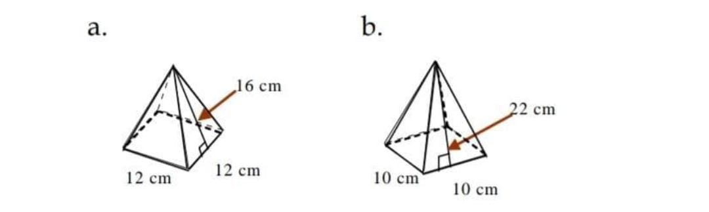
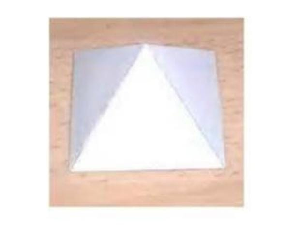
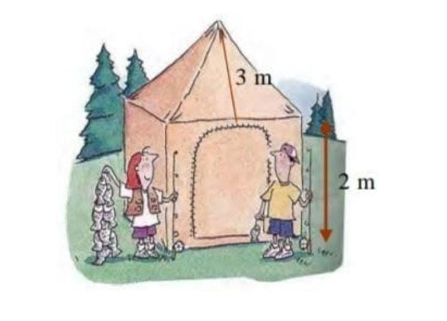

Bangun ruang sisi datar merupakan suatu bangun tiga dimensi yang memiliki ruang/ volume/ isi dan juga sisi-sisi yang membatasinya. Secara garis besar, bangun ruang bisa kita kategorikan menjadi dua kelompok, antara lain: bangun ruang sisi datar dan bangun ruang sisi lengkung. Yang termasuk dalam bangun ruang sisi datar yaitu kubus, balok, prisma, dan limas. Sementara untuk bangun ruang sisi lengkung terdiri atas kerucut, tabung, dan bola. Bangun ruang sisi datar merupakan suatu bangun ruang di mana pada masing-masing sisinya tersusun dari bangun datar. Apabila dalam suatu bangun ruang mempunyai satu saja sisi yang lengkung maka bangun tersebut tidak bisa dikatakan sebagai bangun ruang sisi datar.
Perhatikan bagian atap bangunan di bawah ini. Berbentuk apakah bagian atap itu?
Limas adalah bangun ruang yang dibatasi oleh sebuah bidang segibanyak sebagai sisi alas dan sisi-sisi tegak berbentuk segitiga

Contoh:
Kaitan dengan Dunia Nyata
Pernahkah kamu mendengar salah satu keajaiban dunia yang disebut piramid. Piramid banyak berada di Mesir. Piramid merupakan tempat menyimpan jasad raja-raja Mesir (Fir’aun) yang telah diawetkan dengan balsem yang disebut mummi. Bentuk pyramid merupakan limas. Luas alas limas sekitar 300.000 kaki persegi dan tingginya 321 kaki. Berapakah volume piramid itu?
Penyelesaian :
Jawab :
V = 1/3 At (Gunakan rumus volume limas)
V = 1/3.(300.000). 321
= 32.100.000
Jadi volume piramid sekitar 32.100.000 kaki³ Ringkasan :1. Limas adalah bangun ruang yang dibatasi oleh sebuah bidang segibanyak sebagai sisi alas dan sisi-sisi tegak berbentuk segitiga
2. Rumus soal Limas L = S² + ( 4 x ½ x s x t ) dengan keterangan S = Panjang sisi alas limas dan t = Tinggi sisi tegak limas
3. Rumus volume Limas V = 1/3 At dengan, A = Luas alas limas dan t = Tinggi Limas
4. Rumus Luas permukaan limas = Luas alas + Luas seluruh sisi tegak
Latihan1. Tentukanlah luas permukaan dan volume limas segi empat dengan alas berbentuk persegi yang memiliki sisi 14 cm dan tinggi limas 6 cm, serta tinggi segitiga sisi tegak ialah 8 cm!
Diketahui:
Sisi alas = 14 cm
Tinggi limas = 6 cm
Tinggi sisi tegak = 8 cm
Jawab :
Luas permukaan limas
= Luas alas + 4 x luas sisi tegak
= (14 cm x 14 cm) + (1/2 x 14 cm x 8 cm)
= 196 cm2 + 56 cm2
= 252 cm2
Volume limas
= 1/3 x luas alas x tinggi
= 1/3 x 196 cm2 x 6 cm
= 392 cm2
Jadi, luas permukaan limas tersebut ialah 252 cm3 dan volumenya adalah 392 cm3.
2. Sebuah limas segi empat memiliki panjang sisi alas 12 cm. Jika tinggi limas adalah 72 cm, berapa volume limas segi empat tersebut?
Diketahui:
Panjang sisi alas = 12 cm
Tinggi = 72 cm
= 12 x 12
= 144 cm2
Volume limas
= 1/3 x 144 x 72
= 1/3 x 10.368
= 3.456 cm3
Jadi, volume limas segi empat tersebut adalah 3.456 cm3.
Evaluasi1. Carilah volume limas dibawah ini.
2. Carilah Volume limas segiempat beraturan dengan Panjang rusuk alas 24 m dan apotemanya 13 m dengan membuat sketsa terlebih dahulu
3. Volume sebuah limas adalah 560 m3 dan tingginya 12 m. Berapakah luas alasnya?
4. Bila luas sisi tegak limas segiempat beraturan 192 m2 dan tinggi sisi tegaknya 32 m. Berapakah panjang sisi alasnya?
5. Sebuah tenda berbentuk bangun seperti berikut. Berapakah luas kain yang digunakan untuk membuat sebuah tenda seperti itu, bila alasnya berbentuk persegi dengan ukuran (4 x 4) m2 , tinggi bagian tenda yang berbentuk prisma 2 m dan tinggi sisi tegak bagian atapnya 3 m ?
